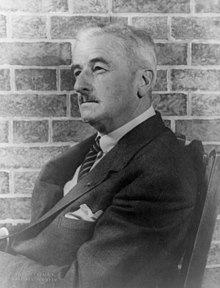

Biography

William Cuthbert Faulkner ( September 25, 1897 – July 6, 1962) was an American writer known for his novels and short stories set in the fictional Yoknapatawpha County, based on Lafayette County, Mississippi, where Faulkner spent most of his life. A Nobel Prize laureate, Faulkner is one of the most celebrated writers of American literature and is considered the greatest writer of Southern literature.
After he was born in New Albany, Mississippi, Faulkner's family moved to Oxford, Mississippi when he was a young child. With the outbreak of World War I, he joined the Royal Canadian Air Force but did not serve in combat. Returning to Oxford, he attended the University of Mississippi for three semesters before dropping out. He moved to New Orleans, where he wrote his first novel Soldiers' Pay (1925). He went back to Oxford and wrote Sartoris (1927), his first work set in the fictional Yoknapatawpha County. In 1929, he published The Sound and the Fury. The following year, he wrote As I Lay Dying. Seeking greater economic success, he went to Hollywood to work as a screenwriter.
Faulkner's renown reached its peak upon the publication of Malcolm Cowley's The Portable Faulkner and his being awarded the 1949 Nobel Prize in Literature for "his powerful and unique contribution to the modern American novel."[3] He is the only Mississippi-born Nobel laureate. Two of his works, A Fable (1954) and his last novel The Reivers (1962), won the Pulitzer Prize for Fiction.[4] Faulkner died from a heart attack on July 6, 1962, following a fall from his horse the prior month.